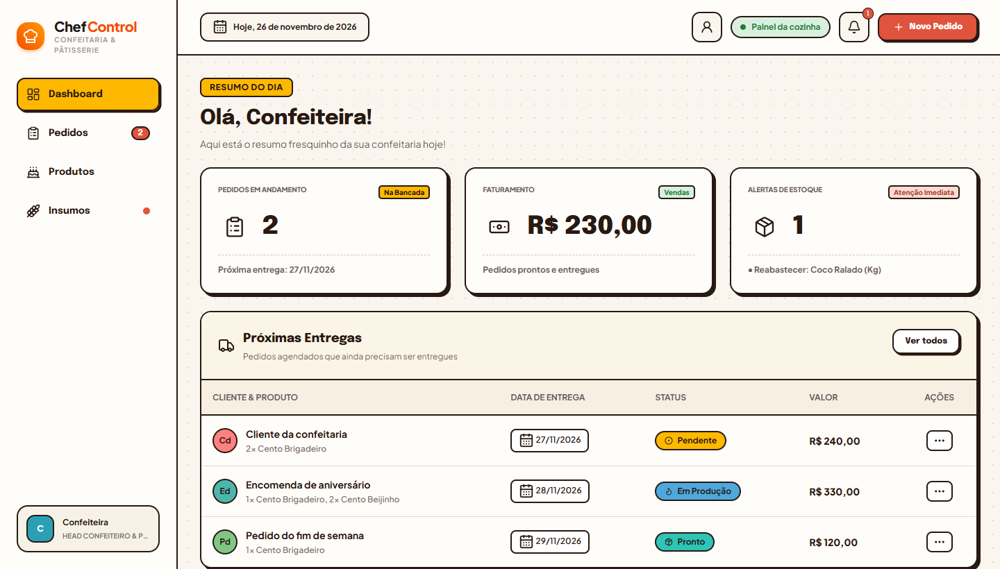
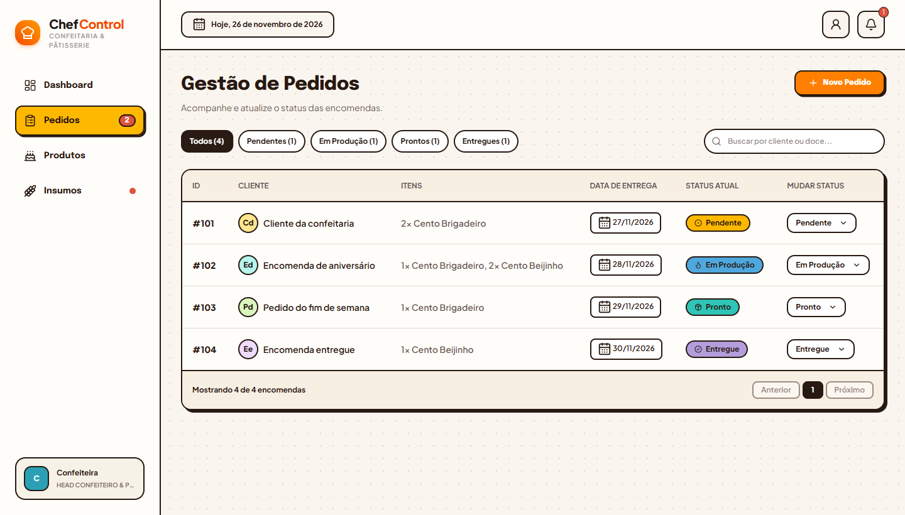
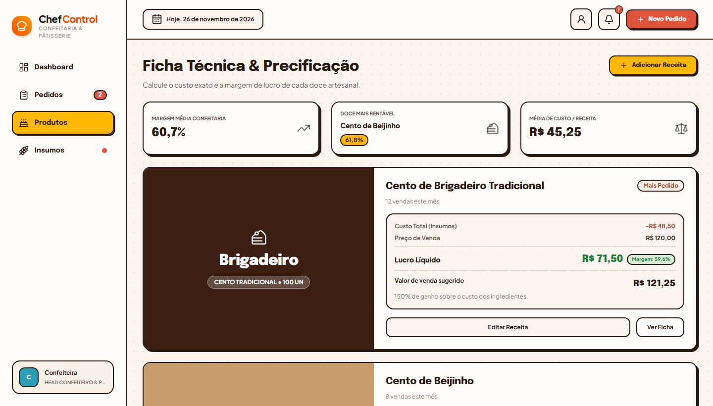
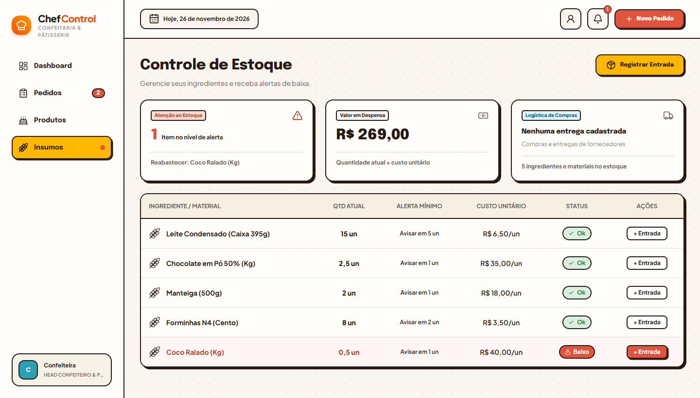

Feito para a sua confeitaria
Gestão para
quem vive de
confeitaria.
Saiba quanto custa cada receita, acompanhe encomendas e organize seus ingredientes. Tudo no seu computador, inclusive sem internet.
Windows 10 e 11 · 64 bits · v1.0.0

A rotina da confeitaria,
em um só lugar.
Da compra dos ingredientes à encomenda pronta, acompanhe o que acontece na sua confeitaria.



Uma receita, todos os números
O preço começa
na receita.
Você compra a embalagem inteira. A receita usa uma parte. O ChefControl calcula o custo da quantidade utilizada e sugere um preço a partir do ganho que você define.
Gramas, quilos, mililitros, litros ou unidades. As medidas entram na mesma conta.
A sugestão considera os ingredientes. Você ajusta o preço final para cobrir as demais despesas do seu negócio.
Experimente o cálculo
Altere a quantidade de chocolate utilizada na receita para simular o custo proporcional.
Simulação com um ingrediente. No aplicativo, o cálculo reúne todos os ingredientes da receita.
Sua confeitaria.
Seus dados.
O ChefControl funciona no seu computador. Pedidos, receitas e estoque continuam disponíveis quando a internet não está.
- Preciso criar uma conta?
Você configura seu perfil no primeiro uso e já pode começar. O aplicativo abre direto no painel nas próximas vezes.
- Funciona sem internet?
Sim. Depois de baixar e instalar, o ChefControl funciona offline, com os componentes necessários incluídos no instalador.
- Como faço uma cópia dos dados?
Feche o aplicativo e copie a pasta de dados do ChefControl para outro local seguro. O guia de instalação explica onde encontrá-la.
- Posso usar no Mac ou no celular?
Esta versão é para Windows 10 e 11 de 64 bits. O aplicativo guarda os dados localmente e não sincroniza entre dispositivos.